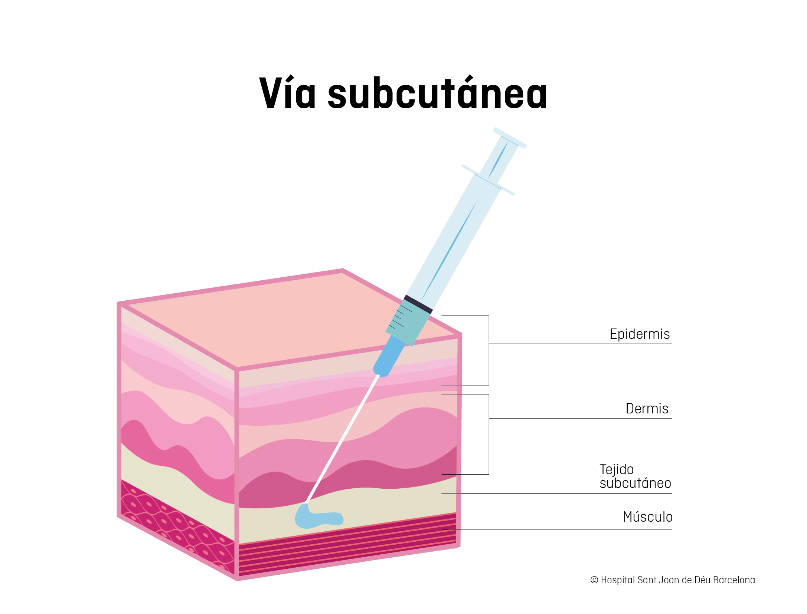
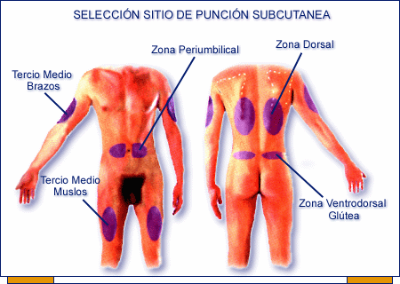

Una inyección subcutánea significa que se aplica en el tejido adiposo, justo bajo la piel. Una inyección subcutánea es la mejor manera de administrarse ciertos medicamentos, como la insulina, anticoagulantes y fármacos para la fecundidad.

Conceptos básicos

Técnica de aplicación
Fundamento fisiológico
Consultado en: https://scielo.isciii.es/pdf/fh/v39n2/02original01.pdf
Manejo de Síntomas Generales y Sedación
| Principio Activo | Indicaciones Principales | Posología Común | Compatibilidades en Jeringa/Infusión |
|---|---|---|---|
| Butilbromuro de Hioscina (Buscapina) | Estertores premortem, secreciones, cólicos. | Bolo: 20 mg (prn) Infusión: 20-60 mg/día | Morfina, Midazolam, Haloperidol, Clonazepam, Fentanilo. |
| Cloruro Mórfico (Morfina) | Dolor, disnea, tos, diarrea. | 0.5 mg/kg/día | Buscapina, Midazolam, Haloperidol, Dexametasona, Ketamina. |
| Midazolam | Convulsiones, sedación, distrés respiratorio. | 2.5 - 60 mg/24h | Buscapina, Morfina, Fentanilo, Haloperidol, Tramadol. |